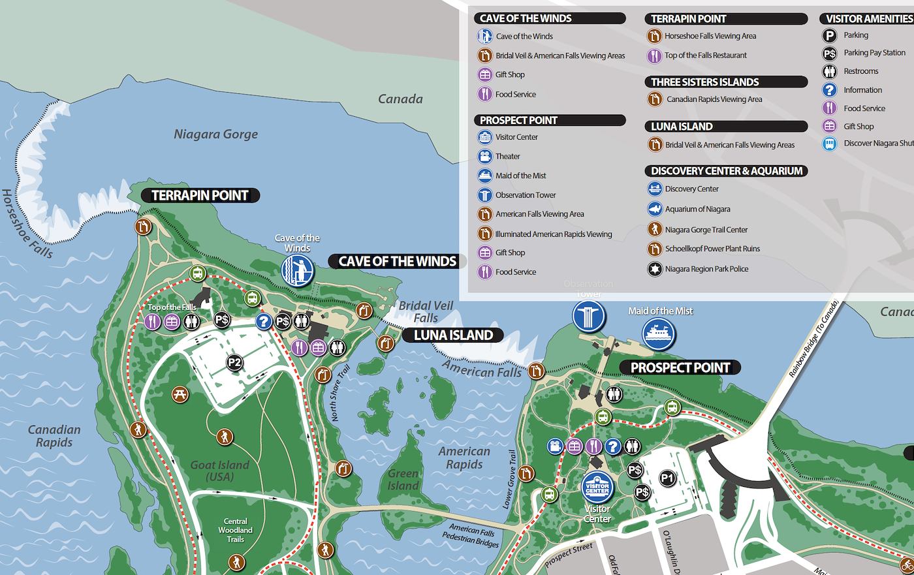
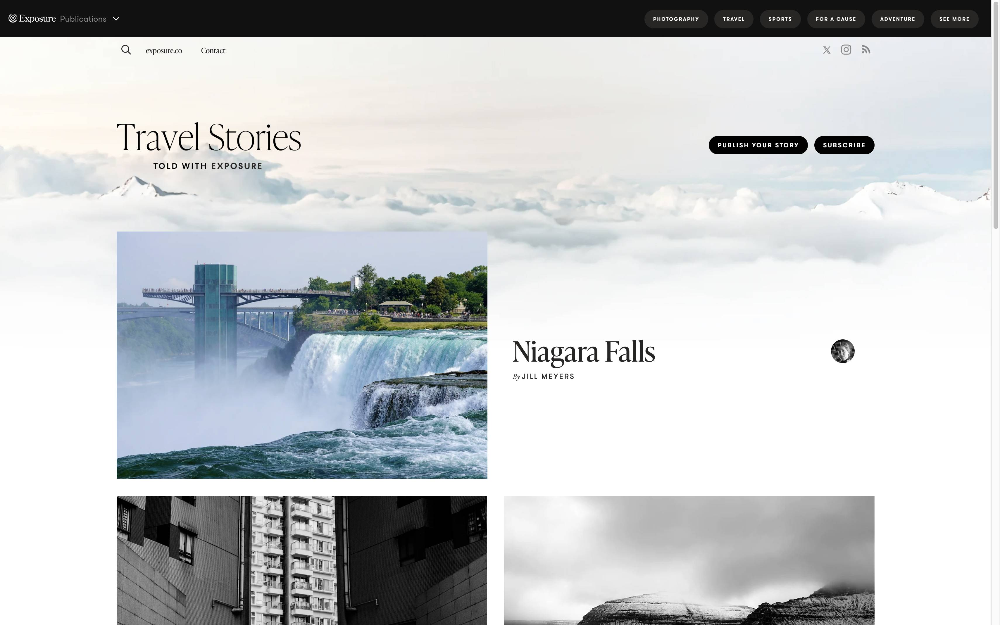
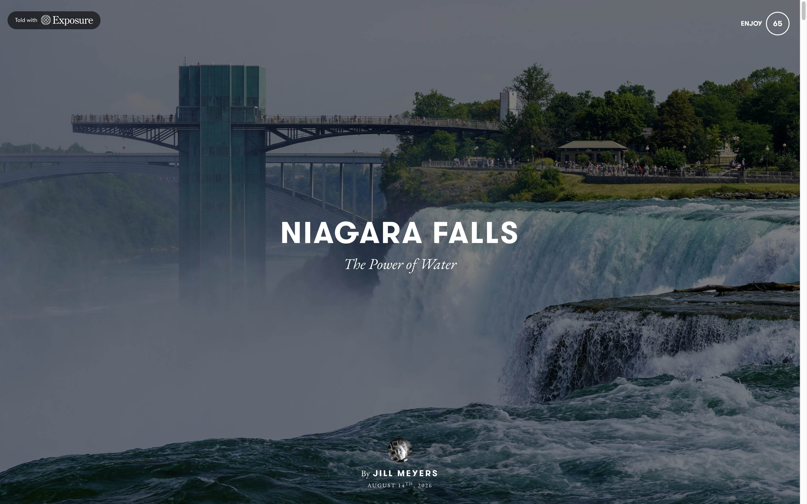

往下滚。图从下面 10 像素处、缩到 99%，用半秒浮上来。这不是装饰，是 Exposure 故事页每一张照片进场的方式。关掉「图浮上来」，它们会直接躺在那儿，味道就没了。

样本：travel.exposure.co，以及点进去的 Niagara Falls。上面那些动是原站的数，不是气氛词。
先看见云和山，像一张没裁完的纸。「Travel Stories」用衬线写在风景上。主打故事是左边一张大图，右边一个标题。点进去，整屏被一张照片占满，标题压在暗罩上。再往下，照片一组一组来，像一本打开的画册。
上一份 Creed 笔记把动效写成了字，所以你看不见。这页反过来：封面落下、图浮上来、悬停抬起，都在上面自己播。看不见就按「再播封面」。


封面落下。图先按 1.08 倍铺满，再在 1.2 秒里收到 1。缓动 cubic-bezier(0.22, 1, 0.36, 1)，原站注释写的是 GSAP power3.out。图一开始就以全不透明出现，所以最大那张图能当 LCP；动的是尺寸，不是淡入。
图浮上来。ScrollReveal：距离 10 像素，缩到 0.99，时长 500 毫秒，曲线 cubic-bezier(0.42, 0, 0.2, 0.99)。几乎刚进视口就触发（viewFactor 0.01）。不是弹，是轻轻到位。
悬停抬起。货架照片 translateY(-5px)，500 毫秒，cubic-bezier(0.77, 0.06, 0.12, 0.98)。标题 hover-fade 到 50% 透明，200 毫秒。抬得很少，所以像纸被掀了一角。
scale(1.08) 开场，1.2 秒收到 1。不要淡入，否则最大图会丢 LCP。opacity:0; transform: translateY(10px) scale(0.99)。进视口用 500 毫秒回到原位。.cover-img { transform: scale(1.08); }
.cover-img.is-in {
transform: scale(1);
transition: transform 1.2s cubic-bezier(0.22, 1, 0.36, 1);
}
.reveal {
opacity: 0;
transform: translateY(10px) scale(0.99);
}
.reveal.on {
opacity: 1;
transform: none;
transition: transform 500ms cubic-bezier(0.42, 0, 0.2, 0.99),
opacity 500ms cubic-bezier(0.42, 0, 0.2, 0.99);
}
.shot img { transition: transform 500ms cubic-bezier(0.77, 0.06, 0.12, 0.98); }
.shot:hover img { transform: translateY(-5px); }
原站还有手机上的全宽视差。第一版先让封面落下和图浮上来成立。视差是第二台机器。